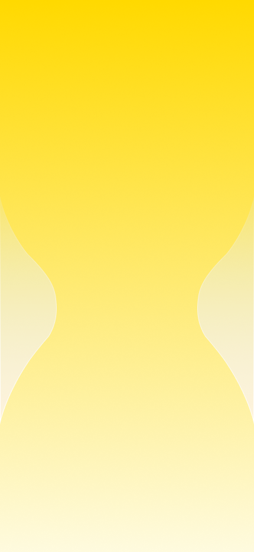
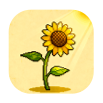
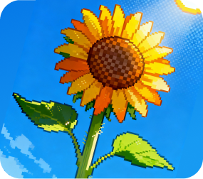
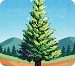
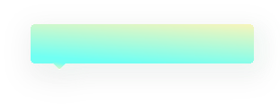
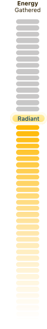

Photosynthesis
Grow every bit of nature you see
into your plant companion.
into your plant companion.
Tap to Start
Choose
Your Plant
Every time you walk toward the light,
I grow a little taller than yesterday.
I grow a little taller than yesterday.
cactus
Needs little. Built for those with irregular routines or indoor life.
Choose this partner

sunflower
Perfect for beginners or anyone looking for an easy-to-care-for plant
Choose this partner

pine tree
Tough wind and pressure. Perfect if you need stability and resilience.
Choose this partner
cactus
Needs little. Built for those with irregular routines or indoor life.
Choose this partner
sunflower
Perfect for beginners or anyone looking for an easy-to-care-for plant
Choose this partner
Sunflower
Radiant

Every bit of sunlight this week — I received it all ✨

7-Day Element Rhythm
✕
☀️ Light3
💧 Water2
🌫️ Air2
🌳 Biome3
将镜头对准任意自然场景
Sun · Water · Sky · Nature
Sun · Water · Sky · Nature
3.2
Sun
x1.5
2.1
Water
x1.2
2.8
Sky
x1.3
3.5
Nature
x1.6

Light Archive
Tuesday, June 23, 2026
MONTUEWEDTHUFRISATSUN
31
2
7
10
22

+8.6
Current Plants

My Plants

Light Archive
MTWTFSS
31
2
7
10
22
Weekly Elements
Sun
3.2
Water
2.1
Sky
2.8
Nature
3.5